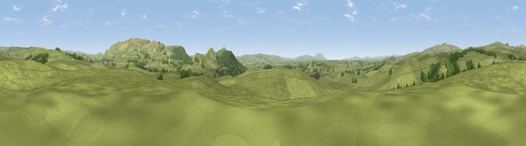

Limekiln Hill
#16519 in England · top 31% of its area beats it · near WinterburnThe view, rendered

A 360° render of this exact spot computed from the terrain model, tree cover and land cover — summer colours, afternoon light, calibrated against photographs of famous viewpoints. Real trees, hedges and buildings will differ in detail.
The panorama
Grey silhouette: terrain skyline in each direction (720 bearings, Earth curvature and refraction included). Dashed green: skyline with trees (+15 m) and buildings (+8 m) as obstacles. Blue strip: how far the ground is visible on each bearing.
Where the view opens
Wedge length = distance to the farthest visible ground on that bearing (vegetation-aware). Rings at 10, 25 and 50 km.
What fills the view
93% grassland · 6% woodland
Angular shares of the visible panorama (visual magnitude), not map area. Landscape diversity 0.11 (0–1 Shannon).
Key numbers
More beautiful places nearby
The staircase of upgrades: each row has a higher view potential than everything closer. Driving times are estimates from straight-line distance, calibrated against real road routing — check an actual route before setting out.
| Place | Direction | Drive | Score |
|---|---|---|---|
| Air Hill | WNW · 3 km | ~6 min | 61.5 |
| Viewpoint near Cracoe | ENE · 4 km | ~9 min | 63.5 |
| Sharp Haw | SSE · 4 km | ~9 min | 72.7 |
| Cracoe Fell | E · 5 km | ~11 min | 75.1 |
| Viewpoint near Kettlewell | NNE · 17 km | ~29 min | 75.6 |
| Pen-y-ghent | NW · 18 km | ~31 min | 75.8 |
| Viewpoint near Kettlewell | NNE · 18 km | ~31 min | 76.6 |
| Viewpoint near Bewerley | ENE · 19 km | ~33 min | 76.8 |
54.02645, -2.09148 · source: osm peak · position refined by local search. Computed location — check access rights before visiting.